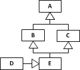

Consider the following class model:
 |
Which of the following statements are true? Select one or more:
☐ All instances of
Cdehave a value for attributea1.☐ The standard identifier of
Cdeisa1.☐ All instances of
Cdemay have an object referenceabreferencing an object of typeBcd.☐ Direct instances of
Abcmay have a value forc.☐ For any object of type
Abcthe value ofa3must be greater than the value ofa2.☐ For any object of type
Cdethe value ofa3must be greater than the value ofa2.☐ The standard identifier of
Cdeisc.
Consider the following class model:
In the case of such a simple class hierarchy, we can use the Class Hierarchy Merge design pattern where the entire class hierarchy is merged into a single class. Which of the following models describes the correct implementation of the Class Hierarchy Merge design pattern for the given Abc class hierarchy? Select one:
O

O

O

O

Which of the following class models include cases of multiple inheritance? Select one or more:
☐
☐
☐
 ☐
How can a given object type be specialized to a subtype? Select one or more:
☐ By extending the object type's intension through adding attributes or associations in the subtype.
☐ By extending the object type's extension through dropping a constraint.
☐ By restricting the object type's extension through adding a constraint.
☐ By restricting the object type's intension through dropping attributes or associations in the subtype..
Consider the following class model. There are 7 object classes: Vehicle, Car, Bike, Trailer, Truck, Motorcar and Van. Car, Bike and Trailer are disjoint subclasses of Vehicle; Truck and Motorcar are disjoint subclasses of Car. Van is a subclass of Motorcar. In addition, there is the association Vehicle has Person as owner, for which the following statements hold:
Each Vehicle has exactly one Person as owner.
It is possible that some Person is not owner of any Vehicle.
It is possible that the same Person is owner of more than one Vehicle.
Which of the following sentences are correct on the basis of this extended model? Select one or more:
☐ It is possible that some Bike has more than one Person as owner.
☐ Each Van has at most one Person as owner.
☐ Each Person is owner of at most one Car.
☐ Each Person is owner of at least one Truck.